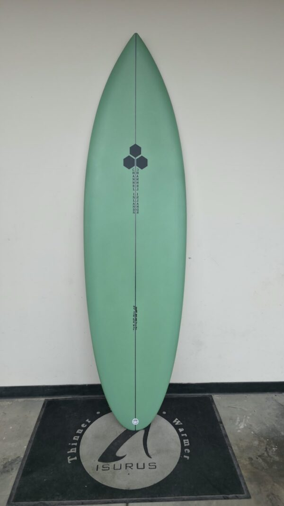

TABLAS DEL SUR

TABLAS DEL SUR

S/. 2570.00
La Twin Pin es una tabla de surf de dos quillas diseñada por Britt Merrick y el surfista profesional Mikey February. Su diseño combina la gran velocidad y libertad típicas de una tabla de dos quillas con una cola redonda en punta, lo que le da un excelente agarre y control en las curvas. Es una tabla muy versátil que funciona de maravilla tanto en olas pequeñas de playa como en olas grandes y potentes.